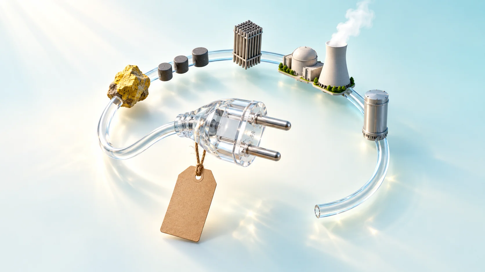
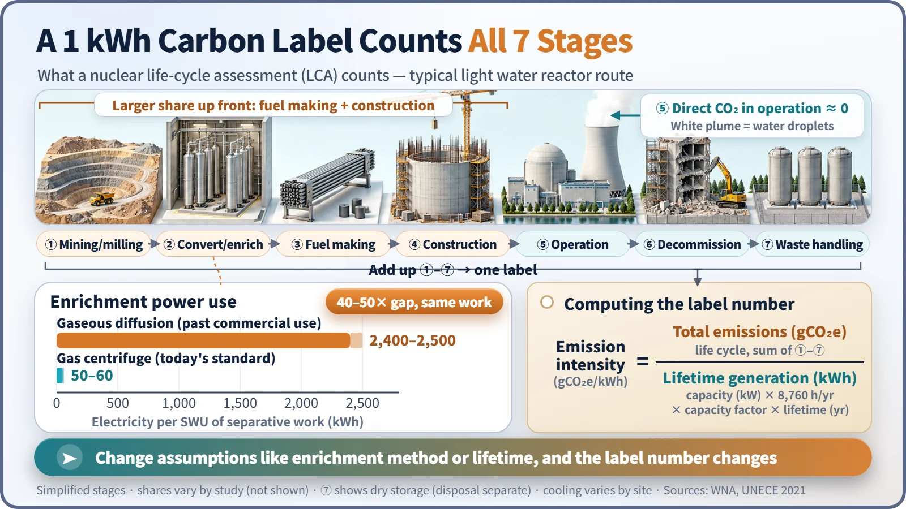
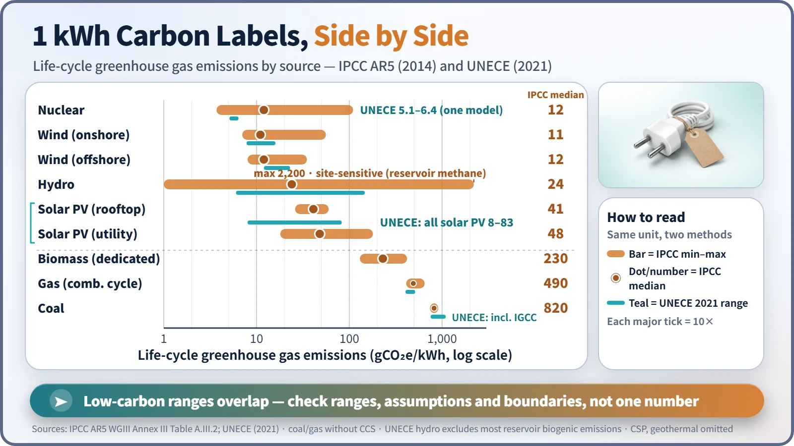

Society, Environment & the Future · 285
What If Electricity Came with a Carbon Label? — Nuclear Power's Life-Cycle Emissions
Nuclear emits almost nothing while running, but a fair carbon label adds up every stage from the mine to the waste store and divides by each kilowatt-hour.

A nuclear plant emits practically no CO₂ while it runs, but its life-cycle emissions are not zero. Life-cycle assessment adds up the greenhouse gases from mining, enrichment, fuel making, construction, operation, decommissioning and waste management, then divides by lifetime generation. The IPCC's review puts nuclear at a median of 12 gCO₂e per kWh, in the same low-carbon range as wind, with results that depend on assumptions such as the enrichment method. [1]
A carbon label for 1 kWh
A carbon footprint label on a bag of chips doesn't just count the factory chimney. It adds up growing the potatoes, pressing the oil, making the bag, trucking it and disposing of it. Counting "from cradle to grave" is life-cycle assessment (LCA), standardized in ISO 14040 and 14044. [5] So what number would go on the label for 1 kilowatt-hour of nuclear electricity?
Why writing "0 g" would be cheating
A nuclear plant burns nothing while it runs, so practically no CO₂ goes up a chimney, and the white clouds above cooling towers are condensed water droplets, not carbon dioxide. But the label doesn't stop at the plant gate. LCA counts mining and milling; conversion and enrichment (raising uranium-235 from about 0.7% to 3–5%, a step heavy water reactors on natural uranium skip); fuel fabrication; construction; operation and maintenance; decommissioning; and spent fuel and waste management.
Many analyses find the larger shares in the front end (making the fuel) and construction. Other greenhouse gases such as methane are converted into their CO₂ equivalent, hence the unit gCO₂e. [2]

One division makes the label number
Emission intensity (gCO₂e/kWh) = total life-cycle emissions ÷ lifetime electricity generation
The denominator matters. A hypothetical 1,000 MW plant at a 90% capacity factor generates about 473 billion kWh over 60 years, or about 315 billion kWh over 40. One-time emissions such as construction are spread more thinly the longer it runs: at 60 years their share per kWh is two-thirds of the 40-year value. The same plant carries a different label depending on the assumed lifetime.
Same uranium, different label: enrichment
The old gaseous diffusion method took about 2,400–2,500 kWh of electricity per unit of separative work (SWU). Today's gas centrifuge does the same work with about 50–60 kWh, a 40- to 50-fold difference. Diffusion plants shut down in France in 2012 and in the United States in 2013. [3]
Whether enrichment electricity comes from coal also sways the result, so older studies assuming diffusion and coal power tend to give higher nuclear values. Lower-grade ore, which takes more energy to mine, is another variable. [4]
Putting the labels side by side
The IPCC's Fifth Assessment Report (2014) summarized ranges from many studies. All values are gCO₂e/kWh. [1]

| Source | IPCC AR5 min–median–max | UNECE 2021 range |
|---|---|---|
| Coal | 740 – 820 – 910 | 751 – 1,095 |
| Gas (combined cycle) | 410 – 490 – 650 | 403 – 513 |
| Solar PV (utility) | 18 – 48 – 180 | 8 – 83 (all PV) |
| Hydro | 1 – 24 – 2,200 | 6 – 147 |
| Nuclear | 3.7 – 12 – 110 | 5.1 – 6.4 |
| Wind (onshore) | 7 – 11 – 56 | 7.8 – 16 |
| Wind (offshore) | 8 – 12 – 35 | 12 – 23 |
Nuclear's median of 12 sits beside wind and in the same low-carbon group as solar and hydro, but its range of 3.7 to 110 is wide, shaped by enrichment methods and assumptions. Hydro's maximum of 2,200 reflects site conditions such as methane from vegetation rotting in tropical reservoirs.
The UNECE report calculated everything with a single method and found 5.1–6.4 for nuclear. Its specific assumptions, such as a 60-year lifetime and centrifuge enrichment, and limited regional detail make the range narrow, so it should not be read as "old value versus new value" against the IPCC range. [2]
What the label doesn't tell you
The low-carbon ranges overlap, so the table can't crown a "number one." The number also moves with the boundary (what is counted), the assumptions (how long and how hard the plant runs) and the age of the data. And it counts only carbon: land and water use, radioactive waste and accident risk need other measures, just as the carbon number on a chip bag says nothing about taste or nutrition.
Key takeaways
Nuclear power's carbon emissions are neither "zero" nor "huge hidden emissions." They are everything from mining to waste management divided by each kWh, and the number shifts with assumptions such as enrichment method and plant lifetime. When you see a carbon comparison table, check the range, the source and what was counted before the single number.